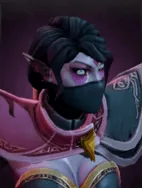

Refraction
Passive Ability
The normal attack of the Templar Assassin always has the effect of Psychic Blade. The attack can penetrate the enemy and cause Pure damage to the enemy pieces directly behind it..
Active ability: Activate when full mana
The Templar Assassin becomes very elusive, gaining an attack power bonus while avoiding damage.
The attack power bonus and damage avoidance effects are independent of each other, and they are both effects that can only be used a certain number of times.
| ★ | ★★ | ★★★ | |
|---|---|---|---|
| NUMBER OF INSTANCES | 4 | 6 | 8 |
| BONUS ATTACK DAMAGE | 80 | 120 | 160 |
| DURATION | 6 | ||
| Cooldown (s) | 8 | 7 | 6 |
| Mana cost | 100 | ||
Manipulating her psionic veil, Lanaya bends natures law to her will.
Stats
| ★ | ★★ | ★★★ | |
|---|---|---|---|
| Health | 950 | 1900 | 3800 |
| Mana | 100 | 100 | 100 |
| Armor | 8 | 8 | 8 |
| Magic resistance | 0% | 0% | 0% |
| Attack damage | 90–120 | 180–240 | 360–480 |
| Attack interval (s) | 0.9 | 0.9 | 0.9 |
| Attack range | 400 | 400 | 400 |
| Move speed | 500 | 500 | 500 |
 Elf · Evasion
Elf · Evasion
- (3) Your Elves gain +25% evasion.
- (6) Your Elves gain another +40% evasion, about 55% in total with the (3) bonus.
- (9) When an Elf dodges an attack, it turns invisible for 1s and summons an illusion of the attacker on your side for 7s. The illusion deals 50% damage and has no mana. 5s cooldown per Elf.
 Assassin · Coup de Grace
Assassin · Coup de Grace
At the start of each battle, Assassins leap behind the enemy lineup with their first move. (The guaranteed critical hit after the leap needs the (3) Assassin bonus or higher.)
- (3) Assassins get a 15% chance to crit for 250% damage. Their first hit after the leap always crits.
- (6) Assassins get an extra, separate 15% chance to crit for 400% damage, which stacks with the (3) bonus. The post-leap crit is 250% or 400% at random.
- (9) Assassins can leap again after getting a kill, or when a 5-10 second timer runs out. Every post-leap hit uses the highest crit the piece has (at least 400%).